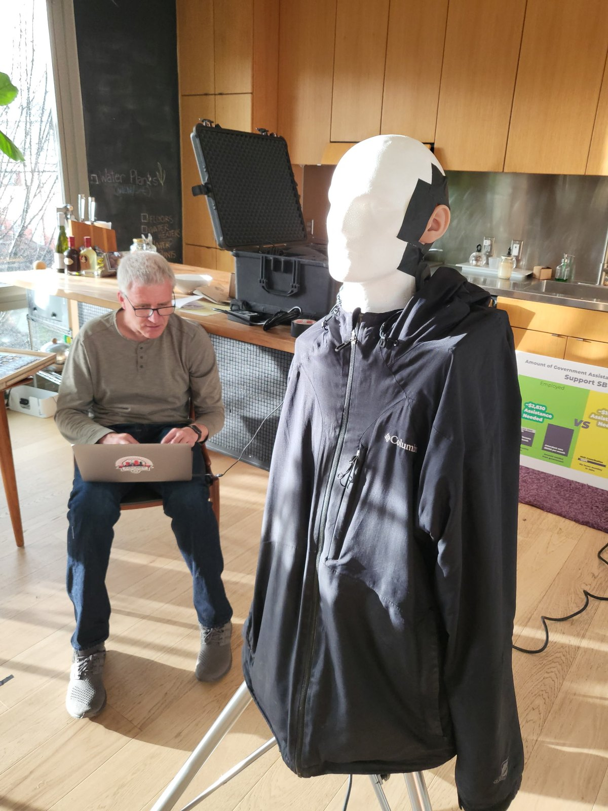
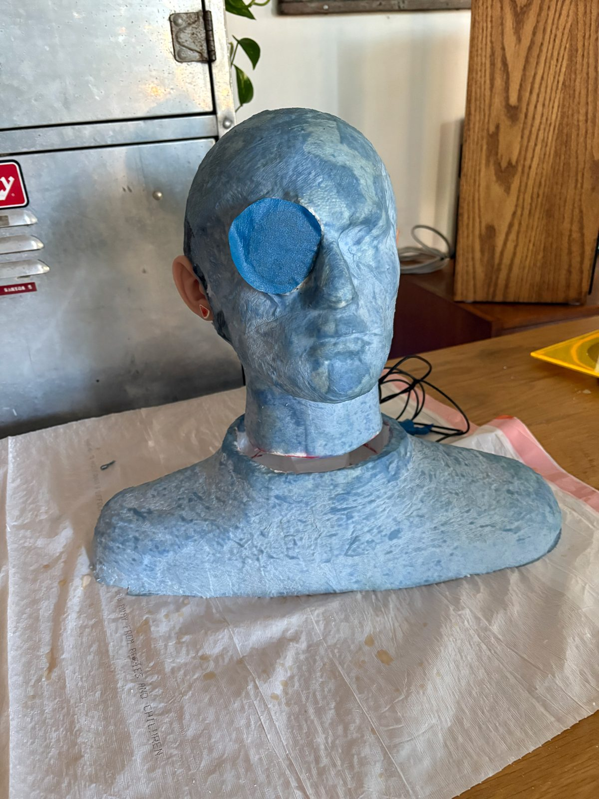
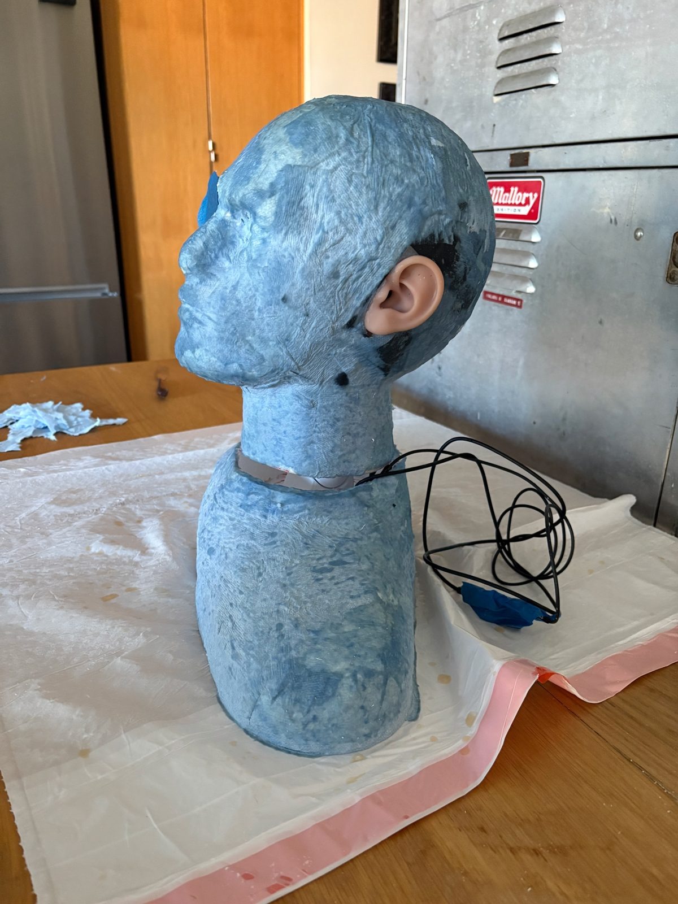

Access Insights
Case Study: Virtual Lex
Every organization has an origin story. Ours is a case study. The people who became Access Insights spent decades honing their craft at one of the world's largest technology companies, and left it at different times, for different reasons. Many of us knew Lex Frieden, chief architect of the Americans with Disabilities Act. So in December 2024, when Lex asked for help being present in rooms he could not travel to, he found a team with the right skills, a shared passion for accessibility, and, for once, the time. Becky Chierichetti led a lip synced avatar. Pete Denman and Richard Beckwith built a robot head, with binaural audio by Marco Beltman. Lex was a codesigner from the first call.
Strongest media for the hero. Candidates: Becky's avatar screenshots (on the way), a short clip of the avatar speaking, or footage from a talk. Until one exists, the page opens without media.
"Imagine and help me implement some creative telepresence demonstration."
Pull quote is from the December 2024 email thread. Pete reads the exact line in context and Lex approves it before this ships.
The origin framing says "one of the world's largest technology companies" without naming it. The ACAT and Connected Wheelchair pages name Intel throughout, so readers can connect the dots. Decide whether to name Intel here or keep it unnamed.
- Role
Team build, with Lex as codesigner throughout
- Organization
The group that became Access Insights
- Timeline
December 2024 to present
- Legacy
The project that led to Access Insights, named January 2026
The challenge
The expertise could not stop. The travel had to.
Lex Frieden has spent five decades shaping disability policy, from architecting the Americans with Disabilities Act to advising governments and universities. The demand for that expertise keeps growing: lectures, conferences, testimony, classrooms. What stopped was his ability to be there in person.
In December 2024 he put the problem to people he knew and trusted: designers, researchers, and engineers who had spent their careers inside a technology giant building for accessibility, and who had each, in their own way and their own time, walked away from that chapter. The question he brought was never whether he had something to say. It was whether a room could experience him, his face, his timing, his presence, when his body could not make the trip. A flat video call was the bar to clear, not the answer.
Why Lex could not travel, in his own words. The origin as Becky and Lex tell it involves his health at the time; that appears here only as he states it and approves it. Until then the page says "could not make the trip" and nothing more.
Approach and build
The user set the brief and the bar
This project began as a request from the person who would live with the result, put to a team that had just stepped out of long corporate careers and into the freedom to choose what mattered. What mattered was this. Lex stayed a codesigner the whole way. The team considered robotics first, then chose to start with a 2D avatar and grow the embodiment from there. Three threads ran in parallel • the avatar • a robot head with real hearing • a holographic display, shelved when budget ran out. Every decision came back to one test: does the room experience Lex, and does Lex experience the room?
An avatar, a head, and open tools
Becky Chierichetti led the avatar: a lip synced, animated likeness built with Character Creator 4, Blender, Unity, iFacialMocap, and VSeeFace. Everything in that pipeline except Character Creator is free or open source, so most of the recipe is copyable by anyone. Pete Denman and Richard Beckwith built the physical embodiment, a robot head based on the Kubi platform, and Marco Beltman, our acoustics researcher, was heavily involved in the binaural audio: microphones seated in realistic ears so Lex hears the room the way a person standing there would, while the head turns toward whoever is speaking.


One build question before this section ships: the site's Proto-Lab copy describes a torso with glasses mounted cameras while Becky describes a Kubi based robot head; these photos show a head and torso bust, so confirm how to describe the rig and whether it evolved.
The use case scenario
One lecture, given from his bed. A room, experienced from inside it.
The people below other than Lex are composites; the workflow is the real one. This is what a session looks like when the system does its job.
- T minus 30
Setup
A caregiver launches the pipeline: capture app, avatar engine, streaming layer, each in the right order. Today this takes coaching, and not every caregiver is tech savvy. The team's own verdict on this step is honest: it is the bottleneck, and the next thing to fix.
- T minus 5
Going live
The avatar comes up on the venue screen: Lex's likeness, animated and lip synced from his actual face and voice in real time. Not a photo beside a phone call. A visible, social presence that holds the room's eyes the way a speaker does.
- Minute 1
Hearing the room
Through binaural microphones seated in the prototype's ears, Lex hears the room in three dimensions: the question from the left, the laugh from the back. Presence is not only being seen. It is knowing where everyone is.
- Minute 20
Turning toward a question
A hand goes up to his right. The robot head turns toward the questioner, and the room reads what bodies read: he is looking at me, he is listening. The gesture costs a motor and a bearing. What it buys is the difference between watching a screen and being with a person.
- Minute 40
The room forgets
Somewhere mid lecture the novelty wears off and the audience is simply in a class taught by Lex Frieden. That is the design goal stated in one line: the technology disappears and the person remains.
- After
The handshake line
Students linger the way they do for a speaker they liked, asking follow ups. Lex takes them one by one, turning to each. The session ends when he ends it, not when a stream drops.
- Next
One click, no coaching
Lex's own roadmap for the system: an app that sets up and runs the whole pipeline in one click, so presence does not depend on which caregiver is on shift. The user is still setting the brief. That is the point.
- Always
What no feature replaces
The avatar has no opinions and the head has no expertise. Every word is Lex's, live. The system exists to carry his presence, never to simulate it, and the difference is the whole ethics of the project.
Presence runs both ways
From Lex
- live face capture
- his voice, in real time
- expression and timing
The pipeline
- Character Creator 4
- Blender
- Unity
- iFacialMocap
- VSeeFace
- mostly free and open
In the room
- lip synced avatar on screen
- robot head that turns
- camera view back to Lex
- binaural sound back to Lex
Presence, not simulation
The system carries a live person into a room and carries the room back to him. Nothing speaks for Lex, predicts Lex, or stands in for Lex.
The person decides. Always.
- his words, live, never generated
- his schedule, his stamina, his call
- his likeness, used only by him
Drawn from the team's build accounts. The avatar and the robot head are two embodiments of the same principle: the room should experience the person, and the person should experience the room.
The outcome
It worked well enough that people forgot.
Project mark cutout reveal goes here if a Virtual Lex mark exists, matching the homepage treatment. None found yet.
In October 2025 the robot head made its public debut at a transit conference. The morning went wrong in exactly the way disabled professionals know too well: Lex lost both of his helpers hours before the event, so the avatar could not be shown. The Kubi head went on anyway, functional, and carried the session. The backup plan was the product demonstrating itself.
The transit conference's name, location, and host. Confirmed date: October 29, 2025, the Encore Global supported event. Also confirm how to carry the helper story: the stakes without other people's medical specifics.
Then came the uses that matter more than any demo, each one a room that treated the avatar as the man himself.
Lex's own record of successful uses, from his September 2026 account: court testimony where the judge believed he was present live, university lectures where students did not realize it was an avatar, meetings requiring on screen presence, a talk at a conference outside the disability field, and a personal conversation involving a family member, which also needs that person's consideration. None of these ship without his sign off.
Then the favor for a friend became something nobody had planned: an organization. The careers that trained this team had ended at different times, for different reasons, but the work of building Virtual Lex proved that the team itself was the thing worth keeping. The group that gathered around Lex's December 2024 ask kept working together, and by January 2026 it had a name: Access Insights. Virtual Lex is not a project the company took on. It is where the company comes from, and it runs the same arc our ACAT and Connected Wheelchair case studies trace through our corporate years: begin with one person's lived reality, cocreate, build, validate in the real world.
- Lex's ask, December 2024
- Avatar and robot head, 2025
- Public debut, October 2025
- Access Insights, January 2026
- One click app, next

In June 2026 Lex presented the work with Pete Denman and Darryl Adams at the AADMD One Voice session on inclusive technology, avatars, and the future of accessibility. His direction after: package the program so others can find it. The pipeline is already mostly free and open tools. What remains is making it effortless.
What this case proves
The end of one journey. The origin of this one.
Virtual Lex is the hinge between two chapters. The skills came from decades inside a big technology company, the same years our other case studies document. The mission came from a friend who needed to be in rooms his body could not reach. When the two met, the arc Access Insights now runs deliberately ran itself: begin with lived experience, a disabled expert defining his own requirements, cocreate, build, and validate in real rooms with real audiences.
It kept a founding voice of the disability rights movement teaching, testifying, and advising, and it founded this organization along the way. The next step, one click setup, is already specified by the user it serves. That is what disabled led development looks like, and it is how we intend to keep working.
Fund a study, co-develop a prototype, or validate an emerging technology.
hello@accessinsights.net
Sources: the team's build accounts from Becky Chierichetti and Lex Frieden, the project email record, the site's Proto-Lab description, and the prototype photographs, with all personal accounts pending Lex's approval as marked.
Lex Frieden sees and approves this entire page before it publishes. Stronger than the courtesy rule on other pages: his voice and likeness are the subject. Also still open: whether Virtual Lex was used at the ADA 35th anniversary in July 2025, the purpose of the November 2025 Dallas trip, and whether the earlier AADMD robot attempt is the transit conference or a separate event.